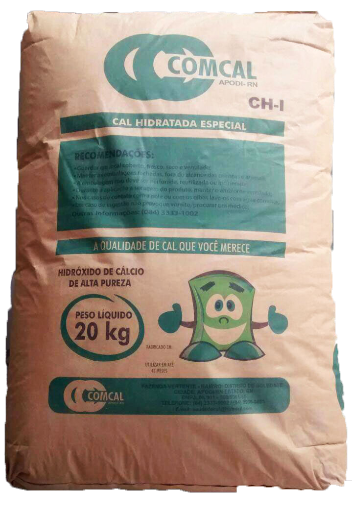

CAL HIDRATADA ESPECIAL

- MAIOR DURABILIDADE E RENDIMENTO
- MAIOR CAPACIDADE DE RETER ÁGUA
- MINIMIZA FISSURAS NA ESTRUTURA
- CAL DE ALTA PUREZA (CH-1)
CAL VIRGEM ESPECIAL

- O CLIENTE ESCOLHE A QUANTIDADE
- EXCELENTE ADERÊNCIA A BASE
- MAIOR VOLUME DE MASSA
- ALTA PLASTICIDADE